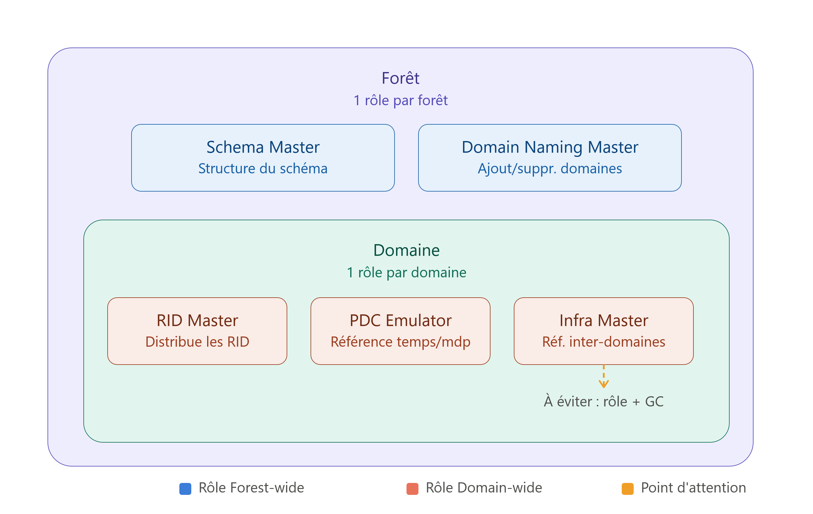

Active Directory ne fonctionne pas comme une base de données classique avec un serveur maître unique et des serveurs esclaves en lecture seule. Il repose sur un modèle de réplication multi-maître : n'importe quel contrôleur de domaine (DC) peut accepter des écritures — création d'un utilisateur, modification d'un mot de passe, ajout à un groupe — puis répliquer ce changement vers tous les autres DC du domaine.
C'est un choix de conception délibéré, pensé pour la disponibilité : aucun DC unique n'est indispensable au fonctionnement quotidien de l'annuaire. Si l'un tombe, les autres continuent d'accepter des écritures et de servir les authentifications.
Mais ce modèle a une limite structurelle. Certaines opérations, par nature, ne supportent pas d'être exécutées simultanément par plusieurs autorités. Ce sont précisément ces opérations que gèrent les rôles FSMO — Flexible Single Master Operations. Ils ne remettent pas en cause le multi-maître : ce sont des exceptions ciblées, greffées sur un modèle par ailleurs entièrement distribué.

1. Pourquoi le multi-maître ne suffit pas partout
Pour la quasi-totalité des opérations d'AD, le multi-maître fonctionne très bien parce que les conflits sont réconciliables après coup. Si deux DC modifient le même attribut d'un même objet avant d'avoir répliqué entre eux, Active Directory applique un mécanisme de résolution de conflit (généralement basé sur un numéro de version et un horodatage) pour décider laquelle des deux écritures l'emporte. Le pire résultat possible est la perte d'une des deux modifications concurrentes — gênant, mais rarement destructeur.
Il existe cependant une poignée d'opérations où cette réconciliation après coup est soit impossible, soit dangereuse :
- Attribuer deux fois le même identifiant unique à deux objets différents ne se "réconcilie" pas — cela crée une ambiguïté d'identité durable.
- Modifier la structure même de l'annuaire (le schéma) de façon concurrente peut produire des définitions contradictoires qu'aucun mécanisme de fusion ne peut recoller proprement.
- Désigner qui fait autorité sur le temps du domaine ne peut, par définition, tolérer plusieurs réponses différentes à la question "quelle heure est-il ?".
Pour ces cas précis, et uniquement pour ceux-là, Active Directory désigne un DC unique responsable. C'est la totalité de ce que sont les rôles FSMO : pas un retour au modèle mono-maître, mais cinq exceptions chirurgicales à l'intérieur d'un modèle qui reste multi-maître pour tout le reste.
Active Directory
│
├── Multi-maître (l'écrasante majorité des opérations)
│ ├── Créer un utilisateur
│ ├── Modifier un mot de passe
│ ├── Ajouter à un groupe
│ └── ... (réconciliable si conflit)
│
└── Exceptions à autorité unique (FSMO)
├── Schema Master
├── Domain Naming Master
├── RID Master
├── PDC Emulator
└── Infrastructure Master2. Les 5 rôles, deux portées
Les cinq rôles FSMO ne se situent pas tous au même niveau. Deux sont uniques pour toute la forêt ; trois sont uniques par domaine.
FORÊT
│
┌───────────┴───────────┐
│ │
Rôles Forest-wide Rôles Domain-wide
(1 par forêt) (1 par domaine)
│ │
┌─────┴─────┐ ┌──────┼──────┐
│ │ │ │ │
Schema Domain RID PDC Infra-
Master Naming Master Emula- structure
Master tor Master| Rôle | Portée | Impact d'une indisponibilité au quotidien |
|---|---|---|
| Schema Master | Forêt | Faible — invisible tant qu'on ne modifie pas la structure de l'annuaire |
| Domain Naming Master | Forêt | Faible — invisible tant qu'on n'ajoute/retire pas un domaine |
| RID Master | Domaine | Progressif — chaque DC a une réserve locale qui finit par s'épuiser |
| PDC Emulator | Domaine | Élevé — impact ressenti dès les premières heures |
| Infrastructure Master | Domaine | Variable — quasi nul en forêt mono-domaine, réel en multi-domaines |
Pour chacun, la question à se poser est toujours la même : que se passerait-il s'il y en avait plusieurs, et que se passe-t-il s'il n'y en a aucun de disponible ?
3. Schema Master
Ce qu'il fait
Le schéma est le plan de construction de tout l'annuaire : il définit ce qu'est un utilisateur, un ordinateur, un groupe, quels attributs chaque type d'objet peut porter, et sous quelle forme. Le Schema Master est le seul DC de toute la forêt autorisé à accepter une modification de ce plan — ajout d'une classe d'objet, ajout d'un attribut, extension nécessaire à l'installation d'un produit comme Exchange ou aux services de certificats.
Pourquoi le schéma nécessite une autorité unique
Le schéma AD définit les règles structurelles de tout l'annuaire :
Schéma
│
├── Quels types d'objets existent ?
│ ├── User
│ ├── Computer
│ └── Group
│
└── Quels attributs possèdent-ils ?
├── name
├── email
├── telephoneNumber
└── ...Il est très rarement modifié. Mais lorsqu'on le modifie, il faut absolument éviter que plusieurs DC acceptent des changements en même temps.
Le problème avec deux écritures concurrentes :
Imaginons que DC1 et DC2 puissent modifier le schéma simultanément :
SCHÉMA
│
┌────────┴────────┐
│ │
DC1 DC2
│ │
▼ ▼
crée l'attribut crée l'attribut
"EmployeeID" "EmployeeID"
│ │
définition A définition B
│ │
└────────┬────────┘
▼
réplicationPar exemple :
DC1 :
EmployeeID
├── ID : X
└── Syntaxe : Integer
DC2 :
EmployeeID
├── ID : Y
└── Syntaxe : StringOn obtient alors deux définitions contradictoires pour le même attribut :
EmployeeID
│
┌───────┴───────┐
▼ ▼
définition A définition B
Integer StringDans ce cas précis, il est impossible d'appliquer le mécanisme classique du « la dernière modification gagne », car le conflit touche la structure fondamentale de la base de données elle-même.
Pourquoi c'est particulièrement grave ?
Un objet utilisateur standard peut être corrigé ou supprimé :
User Alice ──► DELETE ──► Problème résoluÀ l'inverse, les objets du schéma ne peuvent en pratique jamais être supprimés, seulement désactivés. Une incohérence injectée dans le schéma impacte l'ensemble des domaines :
Erreur sur un utilisateur ──► Suppression possible ──► Récupération facile
Erreur dans le schéma ──► Structure altérée ──► Séquelles durables sur toute la forêtC'est pourquoi le Schema Master existe :
Pour éviter toute modification concurrente, un seul DC détient l'autorité à un instant donné :
Schema Master
│
modification autorisée
│
▼
Schéma
│
réplication
┌─────────┼─────────┐
▼ ▼ ▼
DC1 DC2 DC3Le Schema Master ne sert pas parce que les autres DC sont incapables de lire le schéma, mais parce qu'il faut une autorité exclusive pour le modifier.
Conséquences s'il devient indisponible
Aucune sur le fonctionnement quotidien. Les ouvertures de session, l'authentification, la création d'utilisateurs ou de groupes standards continuent normalement — le schéma n'est consulté qu'en lecture pour valider la structure des objets, jamais modifié pour ces opérations courantes.
Opérations qui nécessitent sa disponibilité
- L'installation de tout logiciel qui étend le schéma (Exchange Server, Active Directory Certificate Services avec des modèles avancés, System Center Configuration Manager).
- Le relèvement du niveau fonctionnel de la forêt, qui peut nécessiter des mises à jour de schéma.
- Le déploiement d'attributs personnalisés pour un système de provisioning ou une intégration tierce.
4. Domain Naming Master
Ce qu'il fait
Le Domain Naming Master est l'autorité unique de toute la forêt responsable de l'ajout et de la suppression de domaines, ainsi que de la création et suppression des partitions d'application (comme les zones DNS intégrées à AD, ForestDNSZones et DomainDNSZones).
Pourquoi il doit être unique
Le Domain Naming Master s'occupe principalement de garantir l'unicité des noms de domaines et des partitions au sein de l'infrastructure :
FORÊT
│
┌─────────┴─────────┐
▼ ▼
entreprise.local filiale.localLe risque majeur réside dans le fait que deux contrôleurs de domaine puissent créer indépendamment un nouveau domaine ou une nouvelle partition sans coordination.
1. Le scénario de conflit sur les noms de domaine :
FORÊT
│
┌────────┴────────┐
│ │
DC1 DC2
│ │
▼ ▼
crée un domaine crée un domaine
"paris.local" "paris.local"
│ │
déclaration déclaration
valide valide
│ │
└────────┬────────┘
▼
réplication
│
▼
paris.local
│
┌──────┴──────┐
▼ ▼
DC1 DC2
(Paris) (Paris)On se retrouve avec deux domaines physiquement distincts prétendant détenir le même nom FQDN. Il ne s'agit pas d'une simple divergence sur un attribut utilisateur réconciliable après coup, mais d'une incohérence structurelle de la forêt.
2. Le même problème sur les partitions d'application :
Une partition d'application est un espace de nommage répliqué uniquement sur un sous-ensemble de DC (comme les partitions DNS) :
Forêt
│
├── Domaine
│
└── Partition d'application
│
└── données spécifiquesSi deux DC créent indépendamment une partition portant le même nom mais avec des définitions incompatibles :
DC1 DC2
│ │
▼ ▼
Partition X Partition X
définition A définition B
│ │
└──────────┬─────────────────┘
▼
RÉPLICATION
│
▼
incohérence de structureIci encore, la règle classique de réplication « le dernier changement l'emporte » ne peut pas s'appliquer pour trancher quelle structure de partition doit survivre.
C'est pourquoi le Domain Naming Master existe :
Il impose une étape de validation centralisée avant toute modification de topologie :
Domain Naming Master
│
┌───────────┴───────────┐
│ │
création domaine création partition
│ │
▼ ▼
vérification vérification
du nom du nom
│ │
└───────────┬───────────┘
▼
modification
autoriséeAvant d'acter une création, le DC interrogé vérifie l'unicité globale auprès du rôle FSMO :
- Nom déjà utilisé dans la forêt :
❌ Refus immédiat - Nom disponible :
✅ Validation & Réplication
Conséquences s'il devient indisponible
Aucune sur le fonctionnement quotidien. L'authentification, la réplication et la gestion des objets existants ne dépendent pas de ce rôle.
Opérations qui nécessitent sa disponibilité
- La promotion d'un nouveau domaine (racine ou enfant) dans la forêt.
- La suppression d'un domaine existant.
- La création ou la suppression d'une partition d'application personnalisée.
- Certaines opérations de restructuration de forêt (migration de domaines via des outils comme ADMT).
5. RID Master
Ce qu'il fait
Chaque objet de sécurité (utilisateur, ordinateur, groupe) possède un SID (Security Identifier) dont le dernier segment est le RID (Relative Identifier) — la partie qui le rend unique à l'intérieur de son domaine. Le RID Master distribue par blocs des plages de RID aux différents DC du domaine, pour qu'ils puissent créer des objets localement sans avoir à le solliciter à chaque création.
S-1-5-21-123456789-987654321-555555555-1105
└──────────── identifiant du domaine ─────┘ └─┬─┘
RIDPourquoi il doit être unique
C'est ici que l'enjeu devient directement lié à la sécurité, pas seulement à la cohérence administrative. Le SID est la donnée sur laquelle repose tout le modèle de contrôle d'accès Windows : chaque entrée d'ACL, chaque appartenance de groupe, chaque jeton d'accès généré à l'ouverture de session s'appuie sur l'unicité du SID. Si deux RID Masters distincts pouvaient distribuer des plages de RID de façon indépendante, rien ne garantirait qu'ils ne finissent pas par attribuer le même RID — et donc le même SID complet — à deux objets réellement différents. Le système ne verrait alors plus deux comptes distincts, mais un seul et même principal de sécurité dédoublé : des ACL calculées pour l'un s'appliqueraient silencieusement à l'autre. Ce n'est pas une simple incohérence de données — c'est une rupture du modèle de sécurité lui-même.
Conséquences s'il devient indisponible
Contrairement au Schema Master et au Domain Naming Master, l'impact ici est progressif plutôt qu'immédiat. Chaque DC conserve localement une réserve de RID déjà attribuée qu'il peut continuer à utiliser pour créer des objets. Ce n'est que lorsqu'un DC épuise entièrement sa réserve locale, sans pouvoir en obtenir une nouvelle auprès du RID Master, qu'il devient incapable de créer de nouveaux objets de sécurité — les objets existants, les authentifications et les modifications de comptes déjà créés ne sont pas affectés.
Opérations qui nécessitent sa disponibilité
- La création continuous de nouveaux utilisateurs, groupes ou ordinateurs sur la durée, dès qu'un DC a besoin d'une nouvelle plage.
- Les campagnes de provisioning massif (intégration en masse de nouveaux collaborateurs, déploiement de nombreux postes) qui consomment rapidement les réserves locales.
6. PDC Emulator
Ce qu'il fait
C'est, de loin, le rôle dont l'indisponibilité se remarque le plus vite en production — bien qu'il soit conceptuellement le moins intuitif des cinq, car il n'est pas "propriétaire" d'une ressource unique comme les autres : il joue plutôt le rôle d'arbitre de référence pour plusieurs opérations sensibles au sein du domaine.
Trois responsabilités principales :
a) Il arbitre les changements de mot de passe récents. La réplication AD est asynchrone : après qu'un utilisateur change son mot de passe sur un DC, un court délai peut s'écouler avant que les autres DC connaissent la nouvelle valeur. Si une tentative d'authentification arrive entre-temps sur un DC qui possède encore l'ancien mot de passe, celui-ci peut vérifier directement auprès du PDC Emulator si un changement récent a eu lieu, avant de rejeter la connexion à tort.
b) Il sert de référence de temps pour le domaine. Kerberos, le protocole d'authentification par défaut d'Active Directory, tolère un écart d'horloge maximal très strict entre client et serveur (5 minutes par défaut) — au-delà, les tickets sont rejetés. Le PDC Emulator du domaine racine de la forêt agit comme source de temps principale, les autres DC et les postes membres s'y synchronisant en cascade.
c) Il centralise certaines opérations liées aux comptes. Le traitement de certains verrouillages de comptes et l'édition des GPO par défaut du domaine (Default Domain Policy, Default Domain Controllers Policy) sont conventionnellement dirigés vers le PDC Emulator, pour éviter les incohérences liées à la réplication.
Pourquoi le PDC Emulator doit être unique
Le PDC Emulator (Primary Domain Controller Emulator) occupe une place à part : c'est le rôle FSMO le plus sollicité au quotidien car il sert de point de référence ultime pour des décisions critiques au sein du domaine.
1. La synchronisation du temps (Hiérarchie NTP) :
Dans un domaine Active Directory, la synchronisation horaire est vitale (notamment pour la validité des tickets Kerberos). Sans source unique, les horloges dérivent :
SANS RÉFÉRENCE UNIQUE
│
┌───────────────┼───────────────┐
▼ ▼ ▼
DC1 DC2 DC3
10:00 10:03 10:07Le PDC Emulator du domaine racine de la forêt sert de source de temps faisant autorité pour l'ensemble des autres DC et clients :
PDC Emulator
(Heure de référence)
│
┌──────────────┼──────────────┐
▼ ▼ ▼
DC1 DC2 DC3
10:00 10:00 10:002. La gestion prioritaire des mots de passe :
Lorsqu'un utilisateur modifie son mot de passe sur le DC1, le changement est immédiatement répercuté vers le PDC Emulator, sans attendre le cycle de réplication ordinaire.
Utilisateur ──► Changement de mot de passe ──► DC1 ──(Immédiat)──► PDC EmulatorSi l'utilisateur tente de se connecter dans la seconde suivante sur le DC2 (qui n'a pas encore reçu la réplication ordinaire) :
Utilisateur ──► Connexion ──► DC2 ──(Échec local)──► Vérification PDC Emulator ──► ✅ Connexion réussieCette validation en chaîne évite les refus d'authentification abusifs et le verrouillage intempestif des comptes.
3. Pourquoi la multiplication du rôle est impossible :
Si un domaine comportait plusieurs PDC Emulators simultanés, la notion même de référence s'effondrerait :
PDC1 PDC2 PDC3
(10:00) (10:02) (10:05)
│ │ │
▼ ▼ ▼
Clients Clients Clients
Question : « Quel DC fait autorité pour le temps ou la validation ? »
Réponse : Dépend de la machine interrogée ──► Incohérence globaleConséquences s'il devient indisponible
C'est le rôle dont l'absence se ressent le plus rapidement, en particulier :
- Les changements de mot de passe redeviennent sujets au délai de réplication classique — des échecs d'authentification temporaires juste après un changement de mot de passe peuvent réapparaître.
- La synchronisation de l'heure du domaine cesse d'avoir une source de référence claire, avec un risque de dérive progressive qui, à terme, peut provoquer des rejets Kerberos si l'écart dépasse le seuil toléré.
- Les GPO par défaut du domaine peuvent devenir plus difficiles à éditer de façon cohérente si plusieurs administrateurs travaillent sur des DC différents en simultané.
Opérations qui nécessitent sa disponibilité
- Tout changement de mot de passe où une reconnexion immédiate est attendue.
- La stratégie de verrouillage de compte, dont le traitement cohérent en dépend.
- L'édition des stratégies de groupe par défaut du domaine.
- Le maintien à long terme d'une synchronisation temporelle fiable pour Kerberos.
7. Infrastructure Master
Ce qu'il fait
C'est le rôle le moins intuitif des cinq, parce qu'il ne devient réellement visible que dans une forêt multi-domaines. Sa fonction : maintenir à jour les références vers des objets appartenant à d'autres domaines de la forêt — typiquement, un membre d'un groupe universel ou global qui appartient à un domaine différent de celui où le groupe est défini.
Quand un objet référencé dans un autre domaine est renommé ou déplacé, sa référence locale (appelée phantom) devient obsolète. L'Infrastructure Master est chargé de détecter ces références périmées et de les mettre à jour.
Forêt TechCorp
│
├── europe.techcorp.local
│ └── Groupe-Europe
│ └── référence vers Bob (domaine africa)
│
└── africa.techcorp.local
└── Bob → renommé en Robert
Sans mise à jour, Groupe-Europe continuerait d'afficher une référence vers "Bob" alors que l'objet s'appelle désormais "Robert" dans son domaine d'origine — le SID reste identique, mais l'affichage devient trompeur.
Pourquoi il doit être unique
Si plusieurs DC du même domaine détenaient simultanément cette responsabilité, ils pourraient entreprendre la mise à jour des mêmes références de façon concurrente — un DC corrigeant une phantom référence pendant qu'un autre la traite en parallèle avec une information légèrement différente selon l'état de sa propre réplication. Le résultat n'est pas catastrophique comme pour le RID Master, mais il introduit une incohérence d'affichage selon le DC interrogé, ce qui va justement à l'encontre de l'objectif du rôle : garantir une vue cohérente et à jour des références inter-domaines.
Conséquences s'il devient indisponible
Quasi nulles au quotidien pour l'authentification et les opérations courantes. Le symptôme, quand il apparaît, reste cosmétique et administratif : des références obsolètes (noms périmés d'objets déplacés ou renommés dans d'autres domaines) qui ne se mettent plus à jour, jusqu'au retour du rôle.
Opérations qui nécessitent sa disponibilité
- Le maintien de la cohérence des appartenances de groupes universels/globaux qui référencent des objets d'autres domaines, dans une forêt multi-domaines.
- Certains rapports ou outils d'audit qui s'appuient sur des références inter-domaines exactes et à jour.
Dans une forêt à domaine unique, ce rôle est presque décoratif : il n'existe, par définition, aucune référence vers un "autre domaine" à maintenir.
8. Le point le plus subtil : Infrastructure Master et Global Catalog
C'est ici que la plupart des explications sur les FSMO s'arrêtent trop tôt, alors que c'est précisément le piège le plus documenté — et le plus souvent mal compris — de l'Infrastructure Master.
Ce qu'est le Global Catalog
Un Global Catalog (GC) est un DC qui héberge, en plus de la totalité des objets de son propre domaine, une copie partielle (un sous-ensemble d'attributs) de tous les objets de tous les domaines de la forêt. C'est ce qui permet une recherche forestière rapide — trouver un utilisateur sans savoir dans quel domaine il se trouve — et la résolution des appartenances aux groupes universels.
Pourquoi l'Infrastructure Master ne doit (en général) pas être un Global Catalog
L'Infrastructure Master détecte les références obsolètes en comparant ce qu'il connaît localement d'un objet d'un autre domaine avec l'état réel actuel de cet objet. Mais s'il s'agit lui-même d'un Global Catalog, il possède déjà, en local, une copie de tous les objets de tous les domaines de la forêt — y compris ceux auxquels il pourrait avoir besoin de comparer une référence.
Résultat : un Infrastructure Master hébergé sur un Global Catalog considère qu'il a toujours une vue à jour de tous les objets externes, puisqu'il en héberge déjà une copie locale. Il ne détecte donc jamais de référence obsolète à corriger — pas parce qu'il n'y en a pas, mais parce que son mécanisme de détection repose sur une comparaison qui, dans ce cas précis, ne se déclenche jamais. Les références inter-domaines cessent silencieusement de se mettre à jour, sans qu'aucune erreur ne soit levée : c'est une panne silencieuse, la pire catégorie à diagnostiquer.
L'exception qui confirme la règle
Il existe un cas où combiner Infrastructure Master et Global Catalog est parfaitement acceptable, voire recommandé : lorsque tous les DC du domaine sont eux-mêmes des Global Catalog. Dans ce scénario, chaque DC a déjà une vue complète et à jour de tous les objets de la forêt — le problème que l'Infrastructure Master est censé résoudre n'existe tout simplement plus, puisqu'aucune référence ne peut y être "obsolète" par rapport à ce que chaque DC connaît déjà. C'est typiquement le cas des petites forêts mono-domaine où faire de chaque DC un GC est une pratique courante.
La règle pratique se résume ainsi :
Ne jamais placer l'Infrastructure Master sur un Global Catalog dans une forêt multi-domaines, sauf si absolument tous les DC du domaine sont également des Global Catalog.
9. Transfert (Transfer) vs récupération forcée (Seizure)
Déplacer un rôle FSMO d'un DC à un autre peut se faire de deux façons radicalement différentes selon l'état du détenteur actuel.
Transfert : le DC qui détient actuellement le rôle est disponible et participe activement à l'opération. Il confirme la remise du rôle, réplique les informations nécessaires, et la transition se fait proprement. C'est la procédure normale pour une maintenance planifiée, un remplacement de matériel ou une réorganisation d'infrastructure.
Récupération forcée (seizure) : le DC détenteur est définitivement perdu — panne matérielle irréversible, destruction, compromission majeure — et ne peut plus participer à quoi que ce soit. Un autre DC "s'auto-désigne" alors comme nouveau détenteur, sans confirmation du DC précédent.
Le seizure est dangereux précisément parce qu'il court-circuite la coordination normale : si le DC originel revenait en ligne après une récupération forcée sans avoir été correctement mis hors service au préalable, on se retrouverait avec deux DC croyant chacun légitimement détenir le même rôle — recréant artificiellement, par accident de procédure, exactement le scénario de duplication que les FSMO existent pour empêcher. C'est pourquoi un DC ayant subi un seizure de l'un de ses rôles ne doit jamais être remis en ligne tel quel : il doit être réintroduit proprement dans le domaine, généralement après une réinstallation complète.
| Situation | Action appropriée |
|---|---|
| DC détenteur disponible, maintenance planifiée | Transfert |
| DC détenteur en panne temporaire | Attendre — ne pas forcer un seizure prématurément |
| DC détenteur définitivement perdu | Seizure |
| Après un seizure | Ne jamais remettre l'ancien détenteur en ligne sans réinstallation |
Conclusion
Les rôles FSMO ne sont pas une anomalie dans l'architecture d'Active Directory — ils en sont une pièce assumée et nécessaire. Le multi-maître résout le problème de la disponibilité pour l'écrasante majorité des opérations ; les FSMO résolvent, séparément, le petit nombre de cas où l'unicité d'une autorité prime sur la tolérance aux pannes. Comprendre chacun des cinq rôles, c'est comprendre précisément où se situe cette frontière : ce qui continue de fonctionner sans eux, ce qui se dégrade progressivement, et ce qui s'arrête net — et pourquoi, dans le cas si particulier de l'Infrastructure Master et du Global Catalog, l'erreur de configuration la plus sournoise n'est pas une panne bruyante, mais un silence qui empêche une correction de se produire sans jamais le signaler.